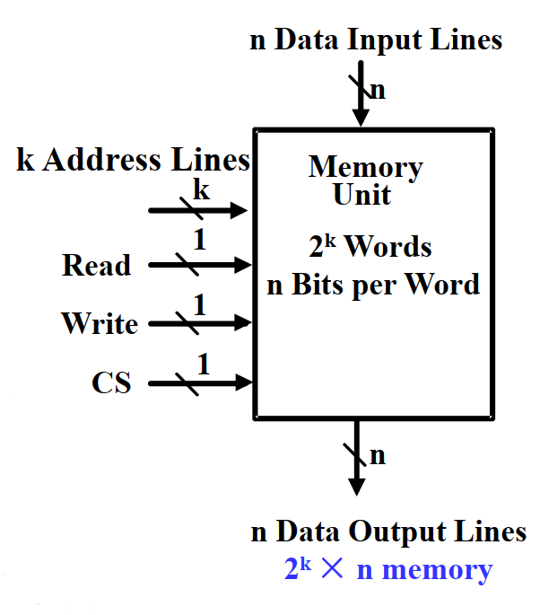
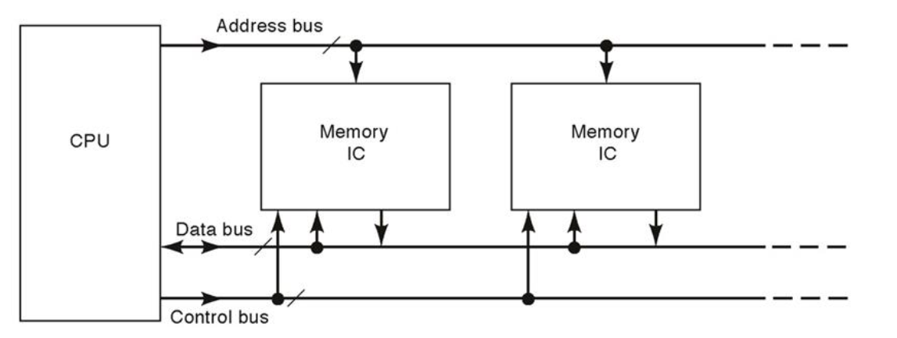
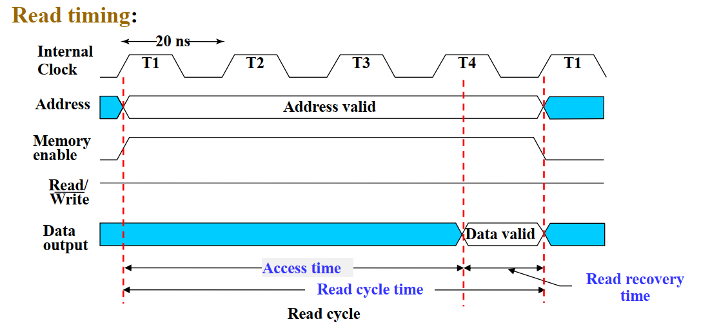
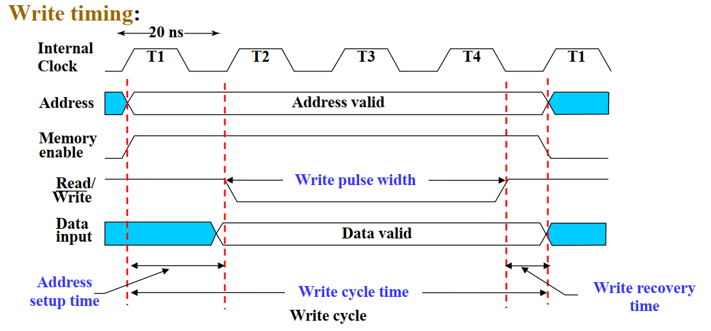
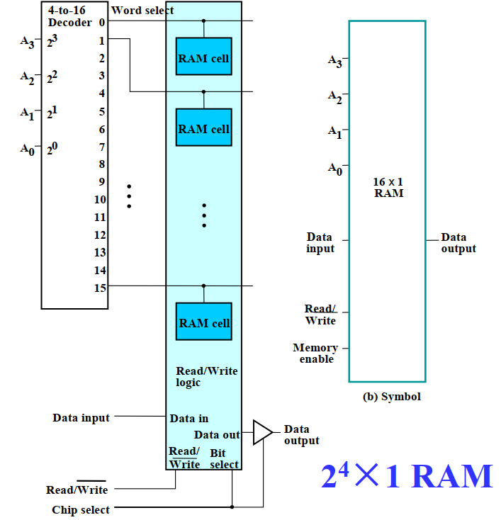
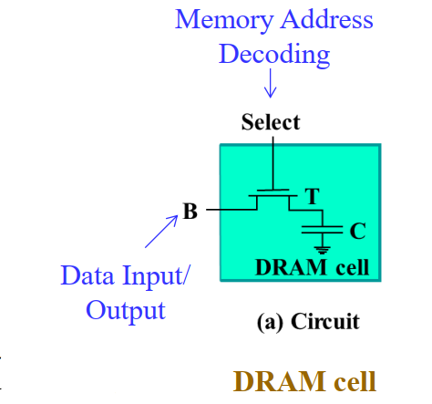
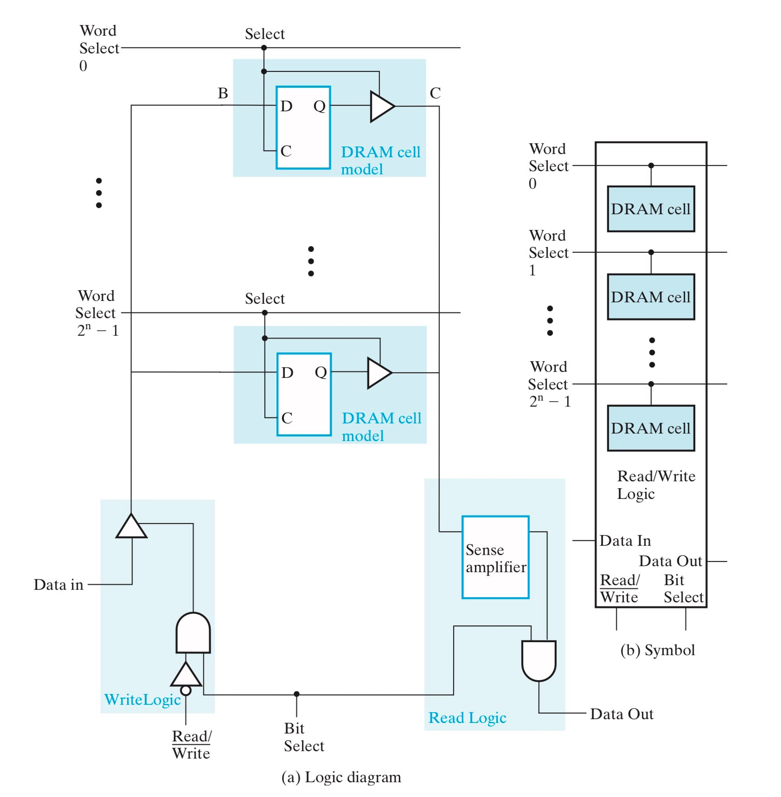
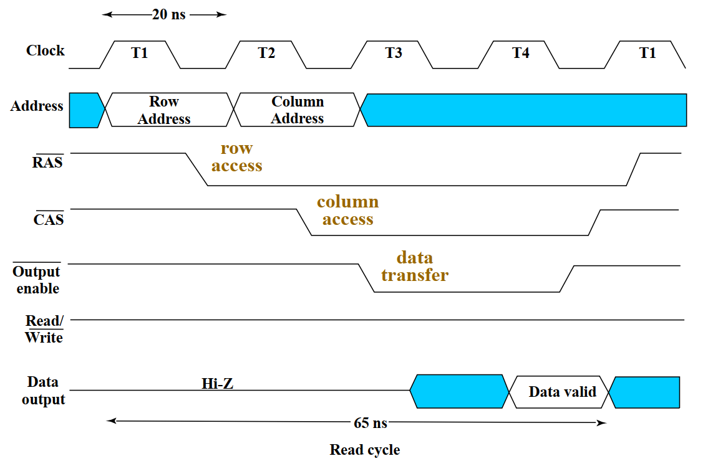

Chapter 7 Memory Basics¶
约 1533 个字 预计阅读时间 8 分钟
Memory Hierarchy in Computers

基础定义¶
- Memory：一系列存储单元及可以与其交换信息的必要电路
- Read-Only Memory：只读内存，在第五章有所提及
- Random-Access Memory：随机访问内存，指内存中数据的读取和写入操作所需要的时间与这些数据所在的位置无关
- Memory Organization：关于Memory如何访问数据的基础结构
- Memory Operation：包括
read和write等经典操作 - 计算机中常用的数据类型主要有三种：
- 位(bit)：最小单元
- 字节(byte)：8 个连续的 bit
- 字(word)：特定数量的连续的 bit，由内存类型决定，传统意义上 1 word = 4 bytes or 2 bytes
- Memory Address：A vector of bits that identifies a particular memory element 数据的物理地址
- Memory Size：\(address\ depth\times word\ width\)
Memory Organization¶
Memory Block System

- CS：Chip Select , also named Chip Enable(CE) 作为Memory的使能信号
- k Address Lines：在内部被译码为 \(2^k\) 个数，用来寻址words of memory (Address Depth)
- Each word is n bit (Words Width)
Basic Memory Operation¶

- 共有三条总线连接到CPU上
- Address Bus：确定数据的物理地址
- Data Bus：从物理地址读取数据 or 传输数据给物理地址
- Control Bus：传输Control Signal，比如Chip Select,Read/Write,etc
| CS | \(R/\overline{W}\) | Memory Operation |
|---|---|---|
| 0 | X | None |
| 1 | 0 | Write to selected word |
| 1 | 1 | Read from selected word |
Read Memory的顺序： (先要等地址信号译码结束)
- Place an address on the address lines
- Toggle(切换) the memory read control line
- Wait for the read data to become stable

Write Memory的顺序：
- Place an address on the address lines and valid data on the data lines
- Toggle the memory write control line

RAM¶
- Types of random access memory
- Static - 数据存储在 Latches 中
- Dynamic - 数据依靠电容(Capcitors)的电压(Electrical Charges)存储
- 电压会泄露（leak）
- 需要阶段性的Refresh电压用来维持数据
Dependence on Power Supply
按照对于电源的依赖性分类，RAM属于 Volatile (易变的) ，当电源关闭，RAM会丢失存储的数据。
而我们生活中常见的硬盘一般属于 Non-volatile

SRAM 静态内存¶
单个SRAM Cell的结构，通过锁存器存储1-bit数据

通过 Decoder ，可以组成RAM ICs(Integrated Circuits) ，下图为 \(2^4\times 1\ RAM\)


上图为一个\(2^n\times 1\) SRAM的细化图，我们分析这个电路的功能：
- 当CS为0时，输入和输出全部无效，RAM无效
- 当CS为1时
- 当 \(R/\overline{W}\) 为0时，Data In 有效，并根据Word Select信号将数据存入对应的Cell中
- 当 \(R/\overline{W}\) 为1时，Data In 无效，输出当前RAM所存储的值
其中，Data In 和 Data Out 都是接在 Data Bus 总线上的，在实际引用中需要用到双向引脚来解决这个矛盾(DIO)
双向引脚
Bidirectional In/Out Data Pins (DIO)

Cell Arrays and Coincident Selection¶
Decoder 的位宽和输入总线的Fan-out都是有限的，制约了内存的扩大。一种有效的解决办法是使用Coincident Selection，即使用两个 Decoder ，分别负责行寻址和列寻址。
下图是 \(2^4\times 1\) RAM 的另一种形式

字拓展 和 位拓展¶
想要从一个 \(4\times 1\) RAM 拓展成 \(16\times 4\) RAM，我们需要知道从 \(4\times 1\) RAM 如何分别得到 \(16\times 1\) RAM (word extension) 和 \(4\times 4\) RAM (bit extension)
Info
在复习时也看见过这种叫法:
- Word-Capacity Expansion: Word extension (address bits are increased)
- Word-Length Expansion: Bit extension
不要记混了
Word Extension 字拓展¶

- \(A_0\) \(A_1\) 正常接入四个 \(2^n \times 1\ RAM\) 中
- \(A_2\) \(A_3\) 接入Decoder，传出的信号作为CS接入RAM，来选择输出哪个RAM的数据
More Example

Bit Extension 位拓展¶

- 将四个RAM并联，D-In 和 D-Out 都一起输出
两个都应用

DRAM 动态内存¶
DRAM Cell 和 SRAM Cell 基本类似，也拥有一个 select 使能端和一组输入输出端，唯一的区别在于存储器的不同。SRAM Cell 使用一个锁存器来存储数据，而 DRAM Cell 使用一个电容和一个晶体管来存储数据。
- 晶体管 T 可以视作一个开关，用来连接外部输入信号 B 和电容 C；
- 电容 C 用于存储数据，当电容为满（电荷量高于某一阈值）时表示高电平 ，当电容为空（电荷量低于某一阈值）时表示低电平

同样通过 Decoder ，组成集成电路。由于元器件使用的少，因此DRAM相比于SRAM电路开销更小，因此广泛应用于大型内存当中。


在确定数据物理地址的时候，先送行地址，再送列地址：行地址读出数据，列地址锁定数据

DRAM Reading Time

Addres Multiplexing 地址复用¶
地址复用
在处理较大数据的时候，由于引脚(Pin)数目的限制，不可能用一个DRAM一次性Transfer所有数据，因此我们采取Addres Multiplexing来减少地址引脚的使用

- 如上图所示，地址复用中，Row Address 和 Col Address 使用的同一个引脚，\(\overline{RAS}\) 和 \(\overline{CAS}\) 分别用来控制Register的载入信号，置0载入
- 因此我们可以先输入行地址，再输入列地址实现同一个引脚完成地址复用
- 如果用二进制表示地址的话，行地址是高八位，列地址是低八位
Example 1

Example 2

Refreshing Policy¶
DRAM需要经常刷新维持它的数据。
刷新模式：
- 爆发模式(burst mode)：停止工作，刷新所有数据
- 分布模式(distributed mode)：间隔一段时间刷新，从而避免长时间的内存阻塞，这种刷新方式更加常用
Warning
后面摆了，有缘再补
Types¶
- Synchronous DRAM (SDRAM)
- Double Data Rate SDRAM (DDR SDRAM)
- RAMBUS® DRAM (RDRAM)